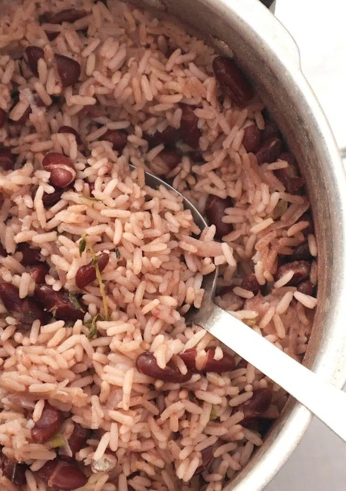

Jamaican Rice and Peas
This Jamaican rice and peas recipe is a staple in many Jamaican households. It is a delicious and filling side dish that pairs well with a variety of Jamaican dishes.
Ingredients
- 1 can (15 oz) red kidney beans, drained and rinsed
- 2 cups long-grain rice
- 1 can (14 oz) coconut milk
- 1/2 onion, chopped
- 2 cloves garlic, minced
- 2 sprigs thyme
- 1 scallion, chopped
- 1 tsp salt
- 1/2 tsp black pepper
- 2 cups water
Instructions
- In a large pot, combine the kidney beans, rice, coconut milk, onion, garlic, thyme, scallion, salt, and black pepper.
- Add 2 cups of water and stir to combine.
- Bring the mixture to a boil over high heat.
- Reduce the heat to low and cover the pot with a tight-fitting lid.
- Cook for 20-25 minutes, or until the rice is tender and the liquid has been absorbed.
- Remove the pot from the heat and let it sit, covered, for 10 minutes.
- Fluff the rice with a fork and serve.